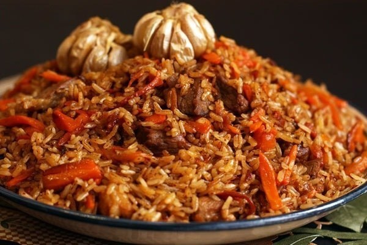

Плов
Рецептов приготовления плова очень-очень много! Я предлагаю рецепт, который очень любим в нашей семье. Так готовит плов мой папа. Плов получается ароматный, рассыпчатый, сочный. Я затрудняюсь сказать точно, сколько получается порций, но его получается много. Съедается он быстро. К плову можно подать овощной салат, или крупно нарезанные помидоры с луком.
Ингридиенты:

1.5 кг мяса (баранины, свинины или говядины)
1 кг риса (в идеале сорта девзира)
600 г моркови
500 г лука
1 ст.л. зиры
1 ст.л. барбариса
½ ст.л. куркумы
1 головка чеснока
красный молотый перец
черный молотый перец
соль
растительное масло
Приготовление
Лук нарезать соломкой.
Мясо нарезать небольшими кусочками.
Морковь нарезать брусочками.
В большом количестве растительного масла (около 150 мл) обжарить лук до золотистого цвета.
Добавить мясо, обжарить.
Добавить морковь, тушить 5–7 минут (крышкой не накрывать.)
Добавить зиру, барбарис, куркуму, посолить, поперчить, перемешать.
Налить воду так, чтобы она покрывала мясо.
Накрыть крышкой, тушить 35–40 минут, на среднем огне.
Рис промыть 5–6 раз, в холодной воде.
Затем всыпать рис (с мясом НЕ перемешивать!), разровнять.
Аккуратно влить горячую или теплую воду так, чтобы она покрывала рис на 2 см.
Немного посолить.
Накрыть крышкой, варить до тех пор, пока рис не впитает воду.
Затем в серединку положить чеснок, вдавить его в рис.
Деревянной палочкой сделать отверстия (рис и мясо не перемешивать) для выхода пара.
Готовить под крышкой до готовности (около 20–25 минут).
Затем все перемешать и подавать к столу.